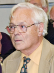

I first met Phil at one of the Federation’s music weekends at Daventry, which I had started attending with my late father, Arthur,
Phil was the technical officer for the Federation and always gave a most insightful roundup of the latest trends in audio techniques and the many new sources of music, including Spotify and other online apps, at the music weekends. It was at one of the weekends that it transpired that Phil was a long-standing member of the Letchworth Recorded Music Society, which is local to me, and he invited me to go along to the next meeting as his guest. I joined soon after. He was also responsible for me joining the FRMS committee, introducing me to one of the meetings in Derby.
Sadly, Phil became unwell a few years ago and he eventually had to ‘retire’ from both his Federation post and meetings in Letchworth. He was a great admirer and quite an authority on Sibelius and regularly gave presentations including his music.
A great fan of PMC loudspeakers, a pair of which graced his living room and were his pride and joy. He got to know the manufacturers, who were in Luton, and was able to arrange the loan of a pair of PMCs for music weekends.
Phil was a one-off and is missed by all who knew him
We send our condolences to Dena and family.
David Wherrell